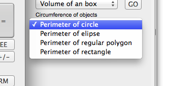
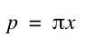
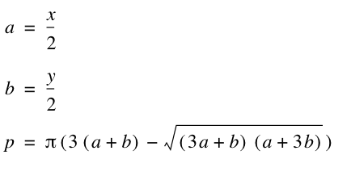
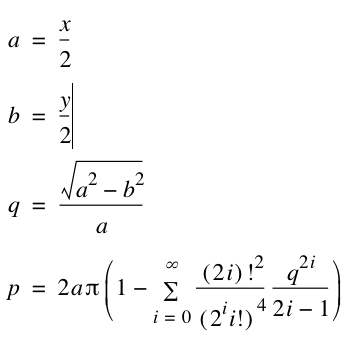
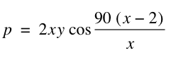
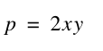

Circumference of objects.
Here is the section of the perimeter functions. Find the circumference of an object.

The first of those, is rather easy: Perimeter of circle:
perimeterCircle(x ) - Calculate the perimeter of an circle
Where
x = diameter
Using the following formula:

Example:
Perimeter of a circle of 15 cm diameter:
perimeterCircle(15)=47.12388981
-----------------The next one, is the perimeter of an ellipse. Unfortunately, there is no easy formula to calculate this. There is some formulas that do it approximately. The only exact way is to use a infinite series calculation.
The famous Indian mathematician Ramanujan came up with this approximation:

Since this function is not very accurate, I have choosen to implemet the infinite series method instead.
perimeterElipse(x; y ) - Calculate the perimeter of an elipse
Where
x = height of elipse
y = width of elipse
Using a infinite series method of calculating the perimeter
Here is the infinite sum formula:

As we dont have included any infinite sum functions in the calculator yet, this is solved with a procedure inside the calculator, and is not a part of the library. Therefor you dont get this on the printroll for this function.
The formula above, runs pretty close to the exact answer after only a few steps, and after 200 steps, the differences are so small, that we stop there. There we have the addition to the sum less than 1e-06. We dont get much closer after 2000 steps more.
Example:
An ellipse, 15 cm high, and 20 cm wide. What is the perimeter.
perimeterElipse(15;20)=55.25873039
----------------------
The next perimeter function, is calculation of the perimeter of an regular polygon:
perimeterRegPolygon(x; y ) - Calculate the perimeter of an regular polygon
Where
x = number of sides
y = distance from center to one of its corners
Using the following formula:

Example:
Calculate the perimeter of a hexagon, where the circumcircle is 10 cm.
perimeterRegPolygon(6;10)=60 cm
------------------------
The last function in this series, is the perimeter of a rectangle.
perimeterRectangle(x; y ) - Calculate the perimeter of an rectangle
Where
x = width
y = hight
Using the following formula:

Example:
perimeterRectangle(10;20)=400
--------------------------